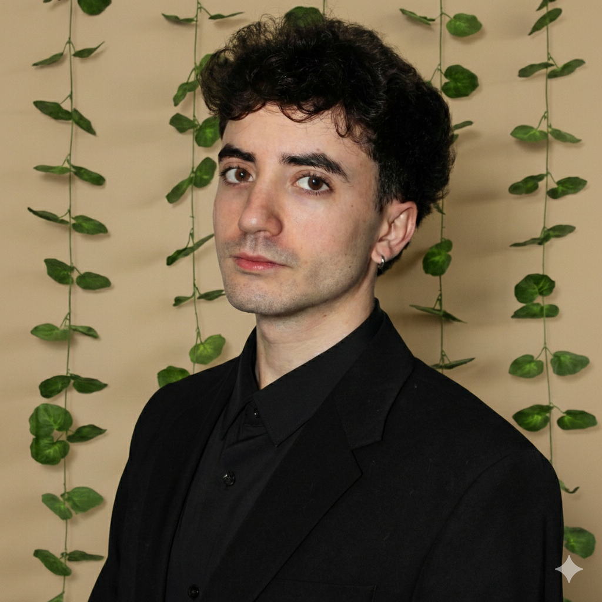

Rubén Pezuela García
Programador Full Stack (Junior) — Automatización con n8n
GitHub: github.com/RubyPG · Portfolio: rubypg.github.io/Portfolio-Web

Astro, TypeScript, React (puntual), Tailwind CSS, SSR, REST
n8n, RAG, Webhooks, Docker Compose, Traefik, Grafana, Amazon SES, GitHub Actions
Supabase, PostgreSQL, SQL, RLS, Realtime, Node.js, Firebase
Kotlin, Compose Multiplatform (JVM), Java 21, Maven, Gradle
- Proactivo y orientado a soluciones; aprendizaje rápido.
- Código mantenible, documentación clara y entregas iterativas.
- Disciplina aplicada a mejora continua.
- CRM desktop Lead-to-Cash: lead→cliente→factura→cobro con UX operativa (tabla, filtros, edición inline, autosave).
- Supabase/PostgreSQL como fuente de verdad + multi-tenant lógico y configuración runtime (client.json + variables de entorno).
- Stripe Invoicing + sincronización de estados por webhooks en n8n, con reglas de consistencia.
- KPIs con vistas SQL + métricas operativas en Grafana (observabilidad del pipeline).
- Plataforma de automatización (n8n-hub + Supabase + Traefik/Docker) para workflows multi-cliente.
- Email transaccional con Amazon SES (SPF/DKIM/DMARC) integrado desde workflows.
- iServices CRM (Astro SSR + Supabase): Auth, RLS, Realtime y arquitectura modular.
- Chatbots RAG con n8n para automatizaciones y atención.
- Desarrollo de aplicaciones de escritorio usando Java.
- Proyecto de reconocimiento de imágenes y patrones con Java y ONNX Runtime.
- Análisis de datos orientado a campañas en Meta Ads.
• Resolución de incidencias software/hardware y mantenimiento físico de equipos (armarios Amazon e InPost).
• Instalación, calibración y mantenimiento de equipos nucleares y sistemas de telecomunicaciones.
• Custodia de ingresos diarios, control de stock y reposición bajo protocolos y normativa visual.
• Picking, ubicación de mercancías y apoyo en inventario/operaciones.
• Instalación de antenas, configuración de routers y mantenimiento de redes; soporte al cliente.
- Técnico Superior DAM (Desarrollo de Aplicaciones Multiplataforma).
- Técnico Superior DAW (Desarrollo de Aplicaciones Web).
- Grado Medio: Instalación de Telecomunicaciones.
- ESO.
- Inglés: B2 (Trinity Grade 10 — with merit).
- Remoto y bolsa de horas.
- Carnet de conducir y coche propio.
- Carnet de carretillero.
- Disponibilidad para viajar (España/Reino Unido).